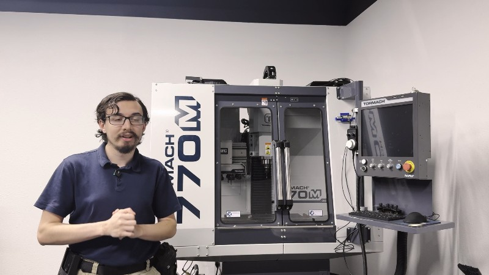
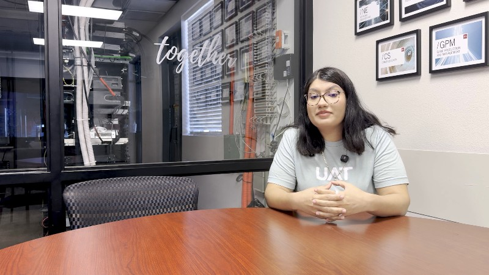
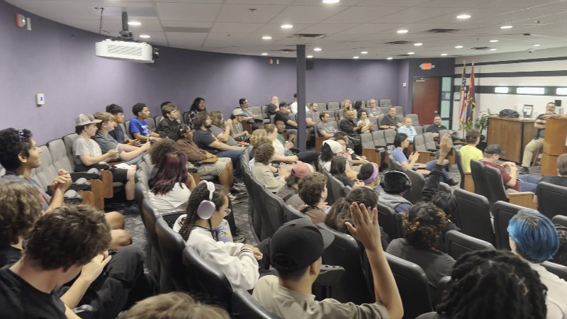
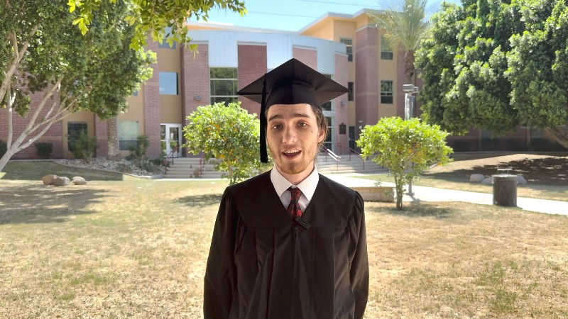
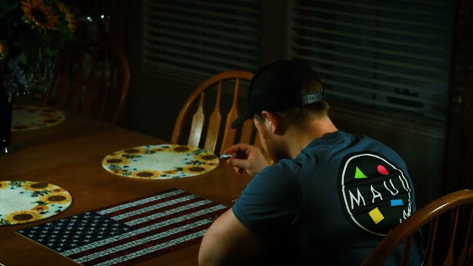
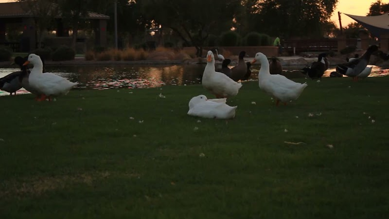
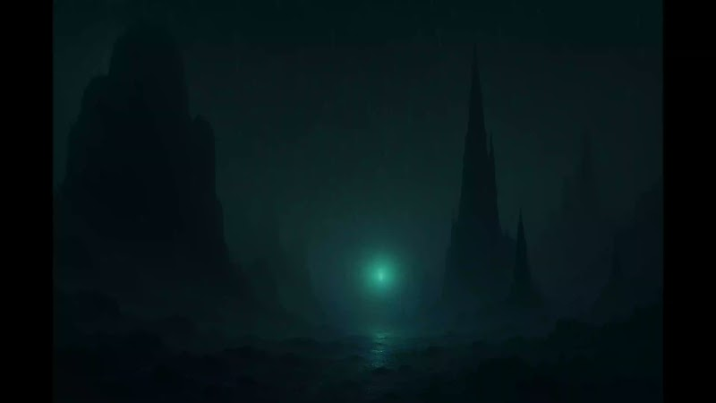
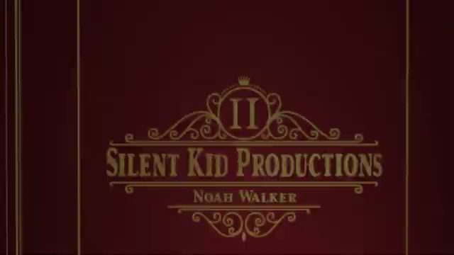
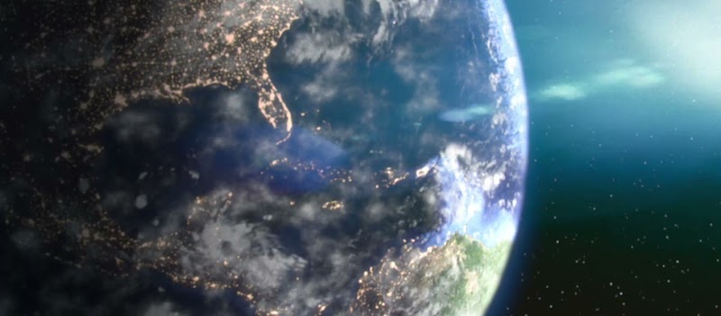
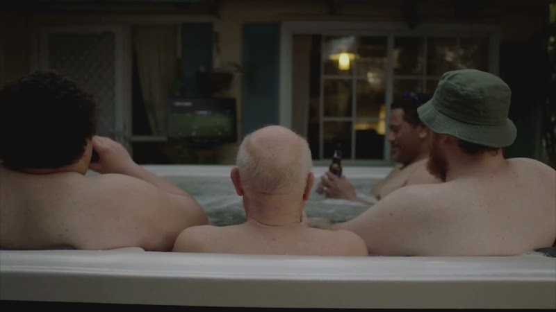

Editing

CNC CONNECT
Managed the complete end-to-end post-production pipeline for the 13-part University of Advancing Technology "CONNECT" series, transforming raw footage into polished final cuts. Created the intro, oversaw narrative pacing for the CNC machinery spotlight, and executed all final audio corrections and leveling and color grading.

Admissons CONNECT
Handled the full edit for this episode of the CONNECT series. The footage originally had two people on camera, but due to a last-minute casting change, I created a clean plate background and an animated mask to completely remove the second person from the chair while keeping narrative there, the audio clean, and matching the rest of the series.

CONNECT Montage
Created the final montage video covering the live student events and campus activities for the CONNECT campaign. Focused on a fast-paced edit that captured the energy and fun of the event while highlighting the student projects and award winners.

Graduates Interviews
This was work done as an Intern Editor at the University of Advancing Technology. I combined and edited four separate graduate interviews into a single, cohesive two-minute promotional video. I Sifted through footage to find overlapping themes, creating a tight, fast-moving narrative that highlights the student experience.

Conceptual Shooting
Filmed and edited a one-minute conceptual visual study, using composition, lighting, and pacing to convey theme without audio. Focused on visual continuity and precise cut placement to drive the narrative purely through imagery.

Anti-Littering PSA
Filmed and edited a 30-second public service announcement addressing littering, focusing on visuals and impactful storytelling. Designed the pacing and layout to meet strict broadcast specifications, resulting in the project being requested for a small sports television broadcast.
The Spa Edit
Edited the short film 'The Spa' using professional footage provided for educational use, assembling the project according to the script with a focus on narrative pacing, continuity, and performance-driven editing.
Sound Design

Alien SoundScape
Captured and processed original field audio to construct an immersive, otherworldly sound environment from an alien planet. Focused on creative sound design, pitch manipulation, and track layering to establish a realistic sense of alien geography and unique acoustic depth.
Ethereal Sound Scape
Created a calming yet slightly uneasy ambient soundscape designed for a specific area within an unannounced video game concept. Field-recorded and synthesized all raw audio assets from scratch, then mixed and layered the final tracks to establish a tense, atmospheric mood.
Facility Sound Scape
Designed an eerie, tense environmental soundscape for a specialized facility level within an unannounced video game concept. Field-recorded and layered raw audio assets with looping psychological cues to create an immersive, unsettling atmosphere that builds a sense of tension for the player.
Audio Story
Took pre-recorded audio from the internet and mixed it together to create a single aural environment to support the narrative and create an immersive experience.
VFX & Motion Graphics

Title Sequence
Animated a stylized title sequence in After Effects as a motion design exercise, focusing on timing and visual rhythm.

Ship Over Earth
Digital assets composited into one scene using Nuke.

Screen Replacement
TV screen composited into the footage using Nuke.